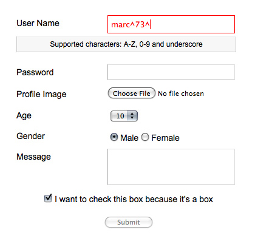

Dynamically generate an HTML form with field validation and custom errors as JSON
Check out the demo provided with this package.
This package can be easily installed using Bower.
$ bower install webform-toolkit#2
Compatible with Firefox 3.6, Chrome, Safari 5, Opera, and Internet Explorer 7+ web browsers.
$ bower install webform-toolkit#1
Manual install:
| Filename | Role |
|---|---|
| webform-toolkit.min.js | The main script to be included from within your HTML document. |
| webform-toolkit.min.css | This style sheet that defines the "look & feel" of the HTML form. |
It's as simple as defining a node container using a JavaScript selector and passing tabular data as JSON. An optional callback can also be defined for post-processing data on submit event.
document.getElementById('container').WebformTookit(config, callback);
Add the following JavaScript/CSS between the <head></head> tags of your HTML document.
<script src="/path/to/webform-toolkit.min.js"></script>
<script>
var webform = document.getElementById('container')
.WebformToolkit({
id: 'example',
action: 'http://www.domain.com/handler',
fields: [
{
id: 'username_id',
label: 'User Name',
type: 'text',
name: 'username',
value: '',
maxlength: '15',
filter: "^\\w{0,15}$",
description: '',
error: 'Supported characters: A-Z, 0-9 and underscore',
required: true
},
{
id: 'password_id',
label: 'Password',
type: 'text',
name: 'password',
value: '',
maxlength: '15',
filter: "^(?!password)(.{8,15})$",
description: 'Must be a minimum of 8 characters',
error: 'The password entered is not valid',
required: true
}
]
}, customHandler);
</script>
<link rel="stylesheet" type="text/css" href="/path/to/webform-toolkit.min.css">
<script src="/path/to/webform-toolkit.min.js"></script>
<script>
var webform = document.getElementById('container')
.WebformToolkit({
id: 'example',
action: 'http://www.domain.com/handler',
fields: [
[
{
label: 'User Name',
type: 'text',
name: 'username',
value: '',
maxlength: '15',
filter: "^\\w{0,15}$",
description: '',
error: 'Supported characters: A-Z, 0-9 and underscore',
required: true
},
{
label: 'Password',
type: 'text',
name: 'password',
value: '',
maxlength: '15',
filter: "^(?!password)(.{8,15})$",
description: 'Must be a minimum of 8 characters',
error: 'The password entered is not valid',
required: true
}
],
[
{
id: 'pincode_id',
label: 'Pin Code',
type: 'text',
name: 'password',
value: '',
maxlength: '8',
filter: "^\\d{8,15}$",
description: 'Must be a minimum of 8 numeric characters',
error: 'The pin code entered is not valid',
required: true
}
]
]
}, customHandler);
</script>
<link rel="stylesheet" type="text/css" href="/path/to/webform-toolkit.min.css">
| Attribute | Description | Required |
|---|---|---|
| label | Field label value | true |
| type | Supported types: text|hidden|password|checkbox|radio|file|select|textarea | true |
| name | Form element name | true |
| value | Default value | true |
| maxlength | Input type maximum length | false |
| filter | Validate form input using REGEX | false |
| description | Custom field description | false |
| error | Custom error message | false |
| required | Required field | false |
The size field definition has been deprecated to be replaced with maxlength going forward. Please adapt your code when using the latest release.
When a callback function is defined a form object is returned. This allows you to define a custom AJAX handler based on the requirements of your application. The following function corresponds to the example provided above.
function customHandler(form) {
var xhr = new XMLHttpRequest();
xhr.addEventListener('load', function() {
if (this.status == 200) {
alert(response);
}
});
xhr.open('POST', form.getAttribute('action'));
xhr.send(new FormData(form));
}
I have added a method to dynamically create form fields that can be added to an existing webform. An optional callback has also been provided to for post-processing FORM and field elements. This makes it easy to show/hide fields using conditions and expressions.
webform.WebformToolkit('create', {
"id": "new_field_id",
"label": "New Field",
"type": "text",
"name": "new_field",
"value": "",
"maxlength": "",
"filter": "^[a-zA-Z0-9]{0,255}$",
"description": "",
"error": "Supported characters: A-Z, 0-9",
"required": "0"
},
function(form, elm) {
form.appendChild(elm); // default: last in fieldset
});
Just because you are filtering form input on the client-side is NO EXCUSE to not do the same on the server-side. Security is a two-way street, and BOTH ends should be protected.
This package has been preconfigured to support QUnit headless testing using Travis-CI. If you plan on using another integration tool you will have to create a custom project that combines the use of QUnit and PhantomJS plugins. If headless testing in not available you can manually run test.html in your web browser.
I have included with this package a packed version (5.3 kB) and developers version (unpacked 14 kB)
You can always find the latest updates within this projects repository.
This projects repository is currently hosted on Github
https://github.com/nuxy/Webform-Toolkit
For feedback, bug reports, or other comments, feel free to contact me at: devel at mbrooks dot info
This package is distributed in the hope that it will be useful, but without any warranty; without even the implied warranty of merchantability or fitness for a particular purpose.
Webform Toolkit is provided under the terms of the MIT license.
Webform Toolkit ©2012-2016 Marc S. Brooks